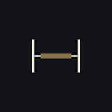
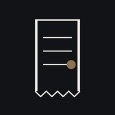

Gatekeeper
axiom-gatekeeper
Checks outbound messaging calls against your own rules (STOP, consent, quiet hours, no double-texting, approved wording) before they run, and holds or denies the call when a check fails.
claude plugin install axiom-gatekeeper@deploy-axiom
Hermes Agent original: hermes-gatekeeper
RepositoryREADME
Keeps a local record of checks that passed or failed, refuses to mark a task done until a check passes, and asks for approval when an agent acts above its level.
claude plugin install axiom-standing@deploy-axiom
Hermes Agent original: hermes-standing
RepositoryREADME
Writes one private log line each time Claude Code refuses a tool call. It only observes: it never blocks, approves or changes a call.
claude plugin install axiom-tripwire@deploy-axiom
Hermes Agent original: hermes-tripwire
RepositoryREADME

Run Receipts
axiom-run-receipts
Writes one private receipt per session or headless run: when it ran, how many tool calls were seen, how many were reported as failed, and how the run ended.
claude plugin install axiom-run-receipts@deploy-axiom
Hermes Agent original: hermes-run-receipts
RepositoryREADME
Remembers a permission request you declined and stops Claude Code asking for the same thing again.
claude plugin install axiom-declines@deploy-axiom
Hermes Agent original: hermes-declines
RepositoryREADME